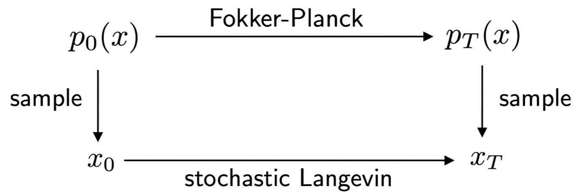
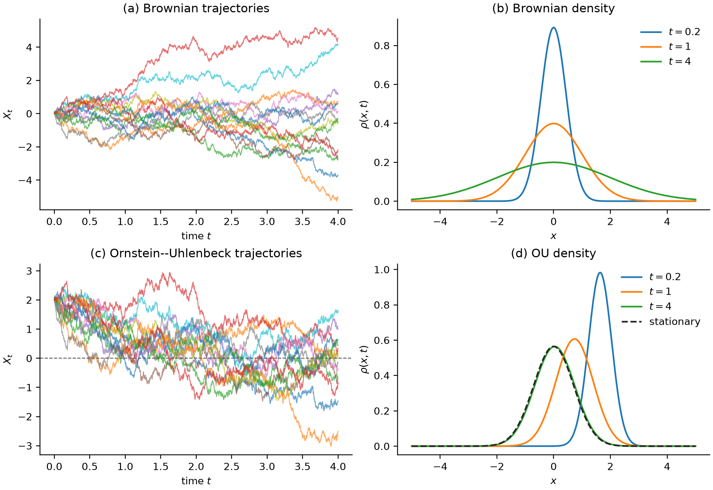
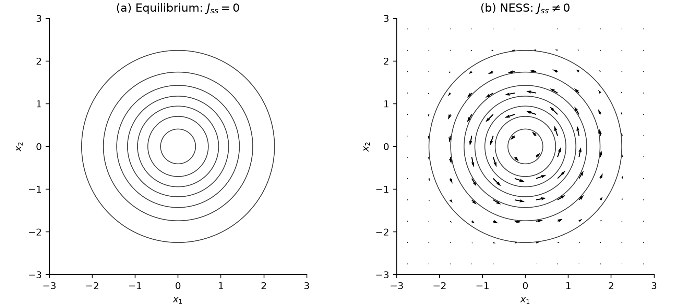

单粒子在d维的随机动力学的系综平均即概率表象下的d维PDE，即Fokker-Planck方程
对d维FP方程的采样即单粒子在d维的随机动力学
概率表象和粒子表象的关系
\[
\rho_N(x,t)=\frac1N\sum_{\alpha=1}^N
\delta^{(d)}(x-X_t^{(\alpha)}),
\qquad
\rho(x,t)=\left\langle\delta^{(d)}(x-X_t)\right\rangle.
\tag{1}
\]

从 Langevin 动力学到 FP 方程
把 Langevin 动力学写成
\[\mathrm dX_t=b(X_t,t)\,\mathrm dt
+\sigma(X_t,t)\,\mathrm dW_t,
\qquad a=\sigma\sigma^{\mathsf T}.
\tag{2}\]
\(b\) 是确定性漂移；\(W_t\) 是 \(m\) 维 Wiener 过程，\(\sigma\) 把 \(m\) 个噪声分量作用到 \(d\) 个状态变量上。噪声为高斯白噪，满足
\[\langle\Delta W_k\rangle=0,\qquad
\langle\Delta W_k\Delta W_l\rangle=\delta_{kl}\Delta t.
\tag{3}\]
因此，从位置 \(x\) 出发的一小步具有
\[\langle\Delta X_i\rangle_x=b_i(x,t)\Delta t+O(\Delta t^2),\qquad
\langle\Delta X_i\Delta X_j\rangle_x
=a_{ij}(x,t)\Delta t+O(\Delta t^2).
\tag{4}\]
先看一个随位置变化的量 \(f(x)\) ，数学上叫测试函数。一步之后的变化按位移展开：
\[f(x+\Delta X)-f(x)
\simeq \partial_i f\,\Delta X_i
+\frac12\partial_i\partial_j f\,\Delta X_i\Delta X_j.
\tag{5}\]
用式（4）取平均，除以 \(\Delta t\) ，再让时间步趋于零，得到
\[\frac{\mathrm d}{\mathrm dt}\langle f(X_t)\rangle
=\left\langle b_i\partial_i f
+\frac12a_{ij}\partial_i\partial_j f\right\rangle.
\tag{6}\]
为方便后文，把这个算子（生成元）记为\(\mathcal L\)
\[\mathcal L f=b_i\partial_i f
+\frac12a_{ij}\partial_i\partial_j f.
\tag{7}\]
式（6）等价于
\[\int f\,\partial_t\rho\,\mathrm d^dx
=\int\left(b_i\partial_i f
+\frac12a_{ij}\partial_i\partial_j f\right)\rho\,\mathrm d^dx.
\tag{8}\]
分部积分得到
\[\int f\,\partial_t\rho\,\mathrm d^dx
=\int f\left[-\partial_i(b_i\rho)
+\frac12\partial_i\partial_j(a_{ij}\rho)\right]\mathrm d^dx.
\tag{9}\]
这里考虑全空间且密度在远处衰减（分部积分在物理中的常见操作，丢掉全积分）。由于对任意 \(f\) 都成立，因此：
\[\boxed{
\partial_t\rho
=-\partial_i(b_i\rho)
+\frac12\partial_i\partial_j(a_{ij}\rho)
\equiv\mathcal L^\dagger\rho.
}
\tag{10}\]
这就是 Fokker-Planck方程。
FP 方程也可以写成连续性方程：
\[\partial_t\rho+\nabla\cdot J=0,
\tag{11}\]
其中
\[J_i=b_i\rho-\frac12\partial_j(a_{ij}\rho).
\tag{12}\]
对于常数各向同性扩散，\(J=b\rho-D\nabla\rho\) ：一部分概率随漂移运动，另一部分由高密度处向低密度处扩散。
两个可解过程：
自由布朗运动
一维自由扩散满足
\[\mathrm dX_t=\sqrt{2D}\,\mathrm dW_t,
\qquad
\partial_t\rho=D\partial_x^2\rho.
\tag{14}\]
若 \(X_0=x_0\) ，基本解为
\[\rho(x,t\mid x_0,0)
=\frac{1}{\sqrt{4\pi Dt}}
\exp\!\left[-\frac{(x-x_0)^2}{4Dt}\right],
\tag{15}\]
因此 \(\langle X_t\rangle=x_0\) ，\(\operatorname{Var}X_t=2Dt\) 。自由布朗运动即是一个扩散的高斯波包
Ornstein–Uhlenbeck 过程
在线性回复力下，
\[\mathrm dX_t=-\gamma X_t\,\mathrm dt+\sqrt{2D}\,\mathrm dW_t,
\qquad \gamma>0.
\tag{16}\]
乘以积分因子 \(e^{\gamma t}\) 可得精确解
\[X_t=x_0e^{-\gamma t}
+\sqrt{2D}\int_0^t e^{-\gamma(t-s)}\,\mathrm dW_s.
\tag{17}\]
随机积分是高斯变量，所以转移核仍是高斯分布，其均值和方差为
\[m_t=x_0e^{-\gamma t},
\qquad
v_t=\frac{D}{\gamma}\left(1-e^{-2\gamma t}\right).
\tag{18}\]
长时间极限为
\[\rho_{\mathrm ss}(x)
=\sqrt{\frac{\gamma}{2\pi D}}
\exp\!\left(-\frac{\gamma x^2}{2D}\right).
\tag{19}\]
若过程从稳态开始，相关函数为
\[\langle X_tX_0\rangle_{\mathrm ss}
=\frac{D}{\gamma}e^{-\gamma|t|}.
\tag{20}\]
\(\gamma^{-1}\) 同时是均值弛豫和相关性衰减的时间尺度。自由布朗运动的方差无限增长；OU 回复力与扩散达到平衡，使方差饱和。

平衡、细致平衡与非平衡稳态
过阻尼 Langevin方程
考虑
\[\mathrm dX_t=-\nabla U(X_t)\,\mathrm dt
+\sqrt{2T_b}\,\mathrm dW_t.
\tag{30}\]
Fokker–Planck 方程及概率流为
\[\partial_t\rho
=\nabla\cdot(\rho\nabla U)+T_b\Delta\rho,
\qquad
J=-\rho\nabla U-T_b\nabla\rho.
\tag{31}\]
令 \(J_{\mathrm eq}=0\) ，得到
\[\nabla\log\rho_{\mathrm eq}=-\frac{\nabla U}{T_b},
\qquad
\rho_{\mathrm eq}=Z^{-1}e^{-U/T_b}.
\tag{32}\]
这就是 Boltzmann 分布 。它来自保守漂移、常数各向同性扩散和零流条件；不能无条件推广到受持续驱动的系统。
定义”自由能“
为什么叫它自由能，是不是有点像F=U-TS，第一项是内能，第二项T_b是温度，\(S=-\int\rho\log\rho\,\mathrm dx\)
\[\mathcal F[\rho]
=\int U\rho\,\mathrm dx
+T_b\int\rho\log\rho\,\mathrm dx.
\tag{33}\]
其变分导数为
\[\frac{\delta\mathcal F}{\delta\rho}
=U+T_b(\log\rho+1).
\tag{34}\]
式（31）可写成
\[\partial_t\rho
=\nabla\cdot\left(
\rho\nabla\frac{\delta\mathcal F}{\delta\rho}
\right).
\tag{35}\]
在无流边界或足够快的无穷远衰减下，
\[\begin{aligned}
\frac{\mathrm d\mathcal F}{\mathrm dt}
&=\int\frac{\delta\mathcal F}{\delta\rho}\,
\partial_t\rho\,\mathrm dx\\
&=-\int\rho
\left|\nabla\frac{\delta\mathcal F}{\delta\rho}\right|^2
\mathrm dx\le0.
\end{aligned}
\tag{36}\]
并且
\[\mathcal F[\rho]-\mathcal F[\rho_{\mathrm eq}]
=T_b\,D_{\mathrm{KL}}(\rho\Vert\rho_{\mathrm eq}).
\tag{37}\]
式（37）说明概率流不断降低自由能：势能偏好低势能区域，熵项偏好更分散的分布，两者在 Boltzmann 分布处达到平衡。
式（35）不仅是一种守恒形式。写成连续性方程
\[
\partial_t\rho+\nabla\cdot(\rho v)=0,
\qquad
v=-\nabla\frac{\delta\mathcal F}{\delta\rho},
\tag{58}
\]
可以把 Fokker–Planck 演化理解为自由能在概率测度空间中的梯度流。相应的离散时间变分格式为
\[
\rho_{n+1}
=\underset{\rho}{\operatorname{argmin}}
\left\{
\mathcal F[\rho]
+\frac{1}{2\Delta t}W_2^2(\rho,\rho_n)
\right\}.
\tag{59}
\]
这就是 Jordan–Kinderlehrer–Otto 格式。它适用于具有相应梯度流结构的 Fokker–Planck 方程，并非任意非平衡环流的通式。这个格式每一步都在权衡自由能的下降与搬运概率的代价。Wasserstein 距离的定义见同系列的《最优传输与分布几何》。
该变分格式及其收敛到 Fokker–Planck 方程的结果见 Jordan、Kinderlehrer 与 Otto（1998） 。
经典非平衡例子：带旋转漂移的二维 OU 过程
稳态只要求 \(\nabla\cdot J=0\) ，稳态定义为 \(\partial_t\rho_{\mathrm ss}=0\) ，因此
\[\nabla\cdot J_{\mathrm ss}=0.
\tag{29}\]
这不等于 \(J_{\mathrm ss}=0\) 。详细平衡要求稳态过程在时间反演下可逆；对本文的偶变量扩散，在常见条件下它对应零稳态流。非平衡稳态可以保持固定密度，同时存在持续环流。
取
\[\mathrm dX_t=\left(-\kappa I+\Omega R\right)X_t\,\mathrm dt
+\sqrt{2D}\,\mathrm dW_t,
\qquad \kappa>0,\quad D>0,
\qquad
R=\begin{pmatrix}0&-1\\1&0\end{pmatrix}.
\tag{38}\]
回复项 \(-\kappa X\) 把粒子拉回原点，反对称项 \(\Omega RX\) 令其旋转。这里把 \(\Omega RX\) 视为在时间反演下保持参数 \(\Omega\) 不变的非保守旋转驱动，而不是会随时间反演变号的磁场。稳态密度为
\[\rho_{\mathrm ss}(x)
=\frac{\kappa}{2\pi D}
\exp\!\left(-\frac{\kappa|x|^2}{2D}\right),
\tag{39}\]
与 \(\Omega\) 无关。然而概率流为
\[J_{\mathrm ss}
=\left[(-\kappa I+\Omega R)x\right]\rho_{\mathrm ss}
-D\nabla\rho_{\mathrm ss}
=\Omega Rx\,\rho_{\mathrm ss}.
\tag{40}\]
当 \(\Omega=0\) 时详细平衡成立；当 \(\Omega\ne0\) 时，密度完全相同，却存在环形概率流。对应的稳态熵产生率为
\[\dot S_{\mathrm{tot}}
=\int\frac{|J_{\mathrm ss}|^2}{D\rho_{\mathrm ss}}\,\mathrm dx
=\frac{2\Omega^2}{\kappa}>0.
\tag{41}\]
式（41）是概率流的不可逆性率。只有在偶变量、单热浴、局部详细平衡以及单位迁移率的 Einstein 关系 \(D=T_b\) 下，它才可直接解释为以 \(k_B=1\) 计的物理总熵产生率；更一般的热、功和时间反演规则见 Seifert（2012） 。

图 2｜密度相同不代表动力学相同。 两图的等高线完全相同。左图 \(J_{\mathrm ss}=0\) ；右图反对称漂移维持无散环流。只观察稳态直方图无法判断详细平衡是否破缺。
势垒逃逸：从首达时间到 Kramers 率
取一维双稳势 \(U(x)\) ，左侧极小值为 \(x_a\) ，势垒顶为 \(x^\ddagger\) ，势垒高度
\[\Delta U=U(x^\ddagger)-U(x_a).\]
过阻尼动力学仍由式（30）描述。精确平均逃逸时间应由后向方程
\[-U'(x)\tau'(x)+T_b\tau''(x)=-1
\tag{42}\]
配合反射与吸收边界求解。在高势垒极限 \(\Delta U/T_b\gg1\) 下，Laplace 渐近展开给出 Kramers 逃逸率
\[k_{\mathrm{esc}}
\simeq
\frac{\sqrt{U''(x_a)|U''(x^\ddagger)|}}{2\pi}
\exp\!\left(-\frac{\Delta U}{T_b}\right).
\tag{43}\]
这和一级相变的成核时间是一致的，\(\Delta U\) 即两相的势垒差
FP方程和前向、后向 Kolmogorov 方程与 Feynman–Kac方程的关系
定义随机过程的生成元
\[\mathcal L f = b_i\partial_i f +\frac12 a_{ij}\partial_i\partial_j f.\]
再定义某个 observable \(g\) 的条件期望
\[u(x,t) = \mathbb E\left[ g(X_T)\mid X_t=x \right].\]
那么核心关系可以概括成：
Backward Kolmogorov
\[\partial_t u+\mathcal L u=0\]
Forward Kolmogorov / Fokker--Planck
\[\partial_t p=\mathcal L^\dagger p\]
而 Feynman–Kac 是对 backward Kolmogorov 的推广：
\[\partial_t u+\mathcal L u-Vu+f=0\]
的解可以写成随机路径的期望值。
如果从泛函分析看，定义 Markov semigroup
\[(P_tf)(x) = \mathbb E_x[f(X_t)].\]
那么
\[P_t=e^{t\mathcal L}.\]
因此 observable 演化：
\[f_t = e^{t\mathcal L}f_0.\]
而概率密度演化：
\[\rho_t = e^{t\mathcal L^\dagger}\rho_0.\]
所以
\[\text{Backward equation} \leftrightarrow e^{t\mathcal L}\]
\[\text{Fokker--Planck} \leftrightarrow e^{t\mathcal L^\dagger}\]
而 Feynman–Kac 对应把生成元改成\(\mathcal L-V\) ,也就是
\[e^{t(\mathcal L-V)}.\]
因此
\[\boxed{ \text{Fokker--Planck} = \text{Forward Kolmogorov} }\]
而
\[\boxed{ \text{Backward Kolmogorov} }\]
是它的伴随/对偶方程 。
最后
\[\boxed{ \text{Feynman--Kac} }\]
是 backward Kolmogorov 及其带势、带 source 推广的随机路径表示 。
时间反演与扩散生成模型
反向过程
反向演化需要知道粒子在过去更可能从哪里来，这取决于当时的密度。因此，反向动力学除了前向漂移和噪声，还要用到密度的空间变化。下面假定密度光滑且为正。对一般扩散张量 \(a=\sigma\sigma^{\mathsf T}\) ，沿原时间坐标从 \(t_f\) 向 \(0\) 积分时，反向漂移为
\[\bar b_i(x,t)
=b_i(x,t)
-\frac{1}{\rho_t(x)}\partial_j\!\left[a_{ij}(x,t)\rho_t(x)\right].
\tag{44}\]
即
\[\bar b_i=b_i-\partial_j a_{ij}-a_{ij}\partial_j\log\rho_t.
\tag{45}\]
若噪声为与状态无关的各向同性形式 \(\sigma=g(t)I\) ，则
\[\boxed{
\mathrm dX_t=\left[b(X_t,t)-g(t)^2\nabla_x\log\rho_t(X_t)\right]\mathrm dt
+g(t)\,\mathrm d\bar W_t,
\quad \mathrm dt<0
}
\tag{46}\]
其中
\[s_t(x)=\nabla_x\log\rho_t(x)
\tag{47}\]
称为 score。若改用正向增加的反向时间 \(s=t_f-t\) ，式（46）的整体漂移符号随变量变换改变。
Probability-flow ODE
考虑
\[\mathrm dX_t=f(X_t,t)\,\mathrm dt+g(t)\,\mathrm dW_t.
\tag{48}\]
其 Fokker–Planck 方程可改写为
\[\begin{aligned}
\partial_t p_t
&=-\nabla\cdot(fp_t)+\frac12g^2\Delta p_t\\
&=-\nabla\cdot\left[
\left(f-\frac12g^2\nabla\log p_t\right)p_t
\right].
\end{aligned}
\tag{49}\]
因此确定性 ODE
\[\boxed{
\frac{\mathrm dX_t}{\mathrm dt}
=f(X_t,t)-\frac12g(t)^2s_t(X_t)
}
\tag{50}\]
与正向 SDE 具有相同的单时刻边缘密度 \(p_t\) 。这里的“相同”不包括路径测度：SDE 轨道有随机二次变差，ODE 轨道是确定性的。
反向 SDE、score 网络与 probability-flow ODE 的生成模型统一表述见 Song 等（2021） 。
参考资料
以下资料给出本文使用的标准结果。
C. Gardiner, Stochastic Methods , 4th ed.：物理取向的 Markov 过程、Fokker–Planck 与随机方法教材。Springer
N. G. van Kampen, Stochastic Processes in Physics and Chemistry , 3rd ed.：主方程、Fokker–Planck、Langevin 与 Itô–Stratonovich 问题。Elsevier
B. Øksendal, Stochastic Differential Equations , 6th ed.：Itô 公式、扩散过程、边值问题与 Feynman–Kac 的较严格入口。Springer
G. E. Uhlenbeck and L. S. Ornstein, “On the Theory of the Brownian Motion,” Phys. Rev. 36 , 823 (1930)：OU 过程的经典来源。APS
H. A. Kramers, “Brownian Motion in a Field of Force and the Diffusion Model of Chemical Reactions,” Physica 7 , 284 (1940)：势垒逃逸与 Kramers 方程。DOI
U. Seifert, “Stochastic Thermodynamics, Fluctuation Theorems and Molecular Machines,” Rep. Prog. Phys. 75 , 126001 (2012)：轨道热力学、熵产生和非平衡稳态。arXiv
B. D. O. Anderson, “Reverse-time Diffusion Equation Models,” Stochastic Processes and their Applications 12 , 313 (1982)：扩散过程时间反演公式。DOI
Y. Song et al., “Score-Based Generative Modeling through Stochastic Differential Equations,” ICLR 2021：反向 SDE、probability-flow ODE 与 score 模型统一框架。OpenReview
R. Jordan, D. Kinderlehrer, and F. Otto, “The Variational Formulation of the Fokker–Planck Equation,” SIAM J. Math. Anal. 29 , 1 (1998)：Fokker–Planck 的 Wasserstein 梯度流与 JKO 格式。SIAM